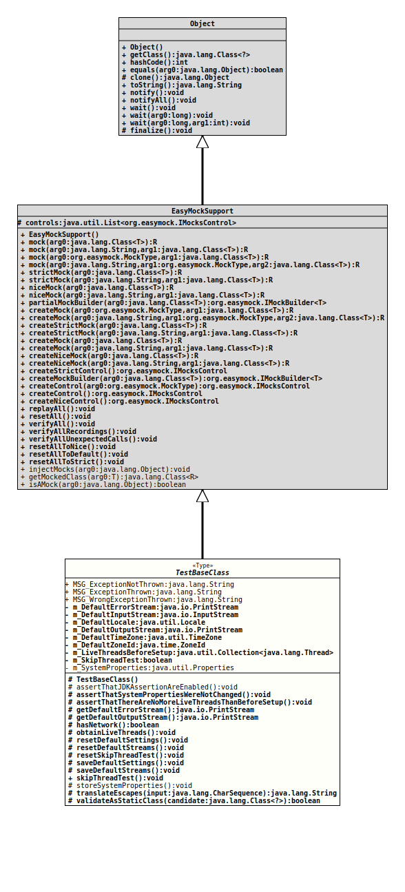

Package org.tquadrat.foundation.testutil
Class TestBaseClass
java.lang.Object
org.easymock.EasyMockSupport
org.tquadrat.foundation.testutil.TestBaseClass
@API(status=STABLE,
since="0.0.5")
public abstract class TestBaseClass
extends org.easymock.EasyMockSupport
A base class for JUnit test classes.
- Author:
- Thomas Thrien (thomas.thrien@tquadrat.org)
- Version:
- $Id: TestBaseClass.java 1074 2023-10-02 12:05:06Z tquadrat $
- Since:
- 0.0.5
- UML Diagram
-

UML Diagram for "org.tquadrat.foundation.testutil.TestBaseClass"
{kind=link}
-
Field Summary
FieldsModifier and TypeFieldDescriptionprivate PrintStreamThe default error output stream.private InputStreamThe default input stream.private LocaleThe defaultLocale.private PrintStreamThe default output stream.private TimeZoneThe defaultTimeZone.private ZoneIdThe defaultZoneId.private Collection<Thread> Threads that are alive before the test is started.private booleanFlag that controls whether the test regarding additional threads will be performed or not.private static PropertiesThe system properties.static final StringThe message for an exception that was not thrown: "Expected Exception \'%s\' was not thrown".static final StringThe message for an unexpected exception that was thrown: "Unexpected Exception \'%s\' was thrown".static final StringThe message that another than the expected exception was thrown: "Wrong Exception type; caught \'%2$s\' but \'%1$s\' was expected".Fields inherited from class org.easymock.EasyMockSupport
controls -
Constructor Summary
Constructors -
Method Summary
Modifier and TypeMethodDescriptionprotected static final voidAs the name of the method indicates, it asserts that the JDK assertions are enabled.
The method usesTestUtils.isAssertionOn()to check whether JDK assertion is currently activated, meaning that the program was started with the command line flags-eaor-enableassertions.
Unfortunately, it is possible to activate assertions for some selected packages only (andorg.tquadrat.testmay not be amongst these), ororg.tquadrat.testis explicitly disabled with-daor-disableassertions(or – most mean!protected final voidAs the name of the method indicates, it asserts that the system properties were not modified.protected final voidAs the name of the method indicates, it asserts that there are no more living threads than there had been before setup.protected final PrintStreamReturns the default error stream.protected final PrintStreamReturns the default output stream.protected final booleanChecks whether the machine, that runs the current test, has network configured.protected final voidReferences to all currently running threads will be stored.protected final voidprotected final voidResets the default streams.protected final voidResets the thread test flag.protected final voidprotected final voidSaves the default streams.final voidSets the thread test flag totrue, disabling that test.protected static voidKeep the system properties.protected final StringtranslateEscapes(CharSequence input) Translates the escape sequences in a String.protected final booleanvalidateAsStaticClass(Class<?> candidate) Validates whether a class is really a static class.
A class is static when it has the following characteristics: The class is final. All methods are static. Only the default constructor may exists, this has to be private, and it has to throw anErroron invocation. If a test fails, the result is written toSystem.out.
The method will not check for the@UtilityClassannotation as this has only the retention levelSOURCE.Methods inherited from class org.easymock.EasyMockSupport
createControl, createControl, createMock, createMock, createMock, createMock, createMockBuilder, createNiceControl, createNiceMock, createNiceMock, createStrictControl, createStrictMock, createStrictMock, getMockedClass, injectMocks, isAMock, mock, mock, mock, mock, niceMock, niceMock, partialMockBuilder, replayAll, resetAll, resetAllToDefault, resetAllToNice, resetAllToStrict, strictMock, strictMock, verifyAll, verifyAllRecordings, verifyAllUnexpectedCalls
-
Field Details
-
MSG_ExceptionNotThrown
The message for an exception that was not thrown: "Expected Exception \'%s\' was not thrown".- See Also:
-
MSG_ExceptionThrown
The message for an unexpected exception that was thrown: "Unexpected Exception \'%s\' was thrown".- See Also:
-
MSG_WrongExceptionThrown
The message that another than the expected exception was thrown: "Wrong Exception type; caught \'%2$s\' but \'%1$s\' was expected".- See Also:
-
m_DefaultErrorStream
The default error output stream. -
m_DefaultInputStream
The default input stream. -
m_DefaultLocale
The defaultLocale. -
m_DefaultOutputStream
The default output stream. -
m_DefaultTimeZone
The defaultTimeZone. -
m_DefaultZoneId
The defaultZoneId. -
m_LiveThreadsBeforeSetup
Threads that are alive before the test is started. -
m_SkipThreadTest
Flag that controls whether the test regarding additional threads will be performed or not.- See Also:
-
m_SystemProperties
The system properties.
-
-
Constructor Details
-
TestBaseClass
protected TestBaseClass()Creates a newTestBaseClassinstance.
-
-
Method Details
-
assertThatJDKAssertionAreEnabled
As the name of the method indicates, it asserts that the JDK assertions are enabled.
The method usesTestUtils.isAssertionOn()to check whether JDK assertion is currently activated, meaning that the program was started with the command line flags-eaor-enableassertions.
Unfortunately, it is possible to activate assertions for some selected packages only (andorg.tquadrat.testmay not be amongst these), ororg.tquadrat.testis explicitly disabled with-daor-disableassertions(or – most mean! – assertions are only activated fororg.tquadrat.test}. Therefore, the outcome of this method will not guarantee for one hundred percent that assertion are always thrown where necessary.- See Also:
-
assertThatSystemPropertiesWereNotChanged
As the name of the method indicates, it asserts that the system properties were not modified. -
assertThatThereAreNoMoreLiveThreadsThanBeforeSetup
As the name of the method indicates, it asserts that there are no more living threads than there had been before setup. -
getDefaultErrorStream
Returns the default error stream.- Returns:
- The default error stream.
-
getDefaultOutputStream
Returns the default output stream.- Returns:
- The default output stream.
-
hasNetwork
Checks whether the machine, that runs the current test, has network configured.- Returns:
trueif the current machine has a network configured,falseotherwise.
-
obtainLiveThreads
References to all currently running threads will be stored.- See Also:
-
resetDefaultSettings
- See Also:
-
resetDefaultStreams
Resets the default streams. -
resetSkipThreadTest
Resets the thread test flag. -
saveDefaultSettings
- See Also:
-
saveDefaultStreams
Saves the default streams. -
skipThreadTest
Sets the thread test flag totrue, disabling that test. -
storeSystemProperties
Keep the system properties. -
translateEscapes
Translates the escape sequences in a String. Refer toString.translateEscapes()for the details.
Use this method to convert the input from CSV files or alike.- Parameters:
input- The input String; can benull.- Returns:
- The processed String; will be
nullif the input was alreadynull. - Since:
- 0.1.0
-
validateAsStaticClass
Validates whether a class is really a static class.
A class is static when it has the following characteristics:- The class is final.
- All methods are static.
- Only the default constructor may exists, this has to be private,
and it has to throw an
Erroron invocation.
System.out.
The method will not check for the@UtilityClassannotation as this has only the retention levelSOURCE.- Parameters:
candidate- The class to inspect.- Returns:
trueif the class is in fact static,falseotherwise.
-